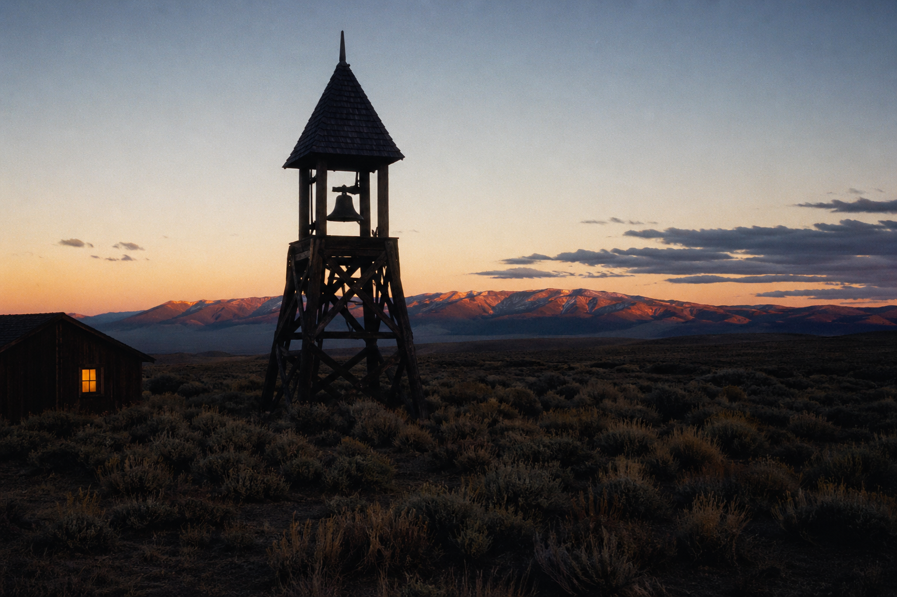

The Land
A working homestead in the high desert south of Burns. Spring-fed, hand-built, three hundred head of sheep, no road out the other side.

A Quieter Calendar Since 2001
A small, private fellowship of farmers, craftspeople, and pilgrims, on four hundred and eighty acres in eastern Oregon. Stays from three nights. Or longer, if the Council calls.
Three Things
A working homestead in the high desert south of Burns. Spring-fed, hand-built, three hundred head of sheep, no road out the other side.
The year 2000 is the Meridian — the threshold beyond which our common life began to thin. We do not own or operate devices made or programmed thereafter.
Five bells a day. Two meals in silence. The evenings dark, the road in long. Most pilgrims describe their first week as the longest of their lives.
“The world did not end at the Meridian. Only the part of it worth keeping.”
Elder Marcus Thorne · Founding Address, 2001
An Invitation
Three nights, full board, two private audiences, the run of the valley between bells. The shortest door we open. Most who come stay longer than they planned; we have prepared for this.